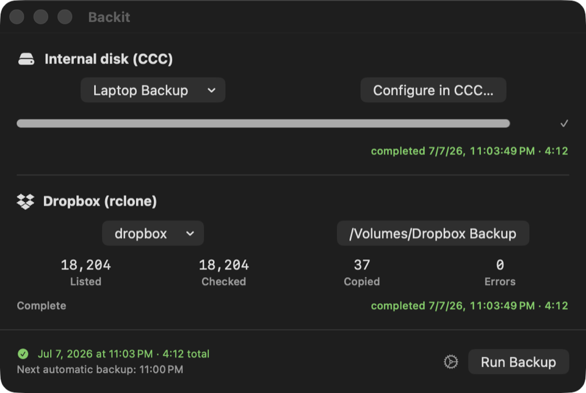

backit runs a nightly Carbon Copy Cloner backup of your internal drive and mirrors your Dropbox to a local volume via rclone — scheduled, monitored, and out of your way.

Maestral, a popular open-source Dropbox client, is no longer maintained — leaving people who relied on it without a reliable way to keep a local copy of their Dropbox contents. backit isn't a sync client. It uses rclone to talk directly to the Dropbox API and mirror your files down to a local backup volume on a schedule, paired with a scheduled Carbon Copy Cloner run of your internal drive — one tool, two dependable local backups.
rclone copies one-way, from Dropbox down to the local volume. Don't create, edit, or delete files directly in the local backup copy — nothing you do there is sent back to Dropbox, and any changes will be silently overwritten or deleted on the next run to match whatever is currently in Dropbox. Make your real edits in Dropbox itself.
Two independent backup jobs, one scheduler.
A named Carbon Copy Cloner task backs up your internal drive; rclone mirrors your Dropbox to a local volume.
Reminder, final pre-backup check, and backup time are all configurable — with computed times shown live.
Only want one of the two backups? Turn either the CCC or Dropbox job off from Settings.
Byte counts, transfer rate, and elapsed time update as each backup runs, right in the main window.
Every run — and each job's result within it — is recorded to a local SQLite database.
An optional rclone check after each Dropbox sync surfaces drift between source and destination.
A LaunchAgent triggers a background run once a day at your configured time — no window required.
One click in a notification (or in Settings) defers tonight's run if you're not ready.
backit skips silently and notifies you if the backup drive isn't connected at run time.
brew install rclone)No signed releases yet — build from source with Xcode:
git clone https://github.com/joemcmahon/backit.git cd backit xcodebuild build -project backit.xcodeproj -scheme backit
Then copy backit.app to /Applications/ and launch it.